Bản xuất tĩnh từ canvas (trạng thái mặc định). Bấm vào ảnh để mở màn hình.
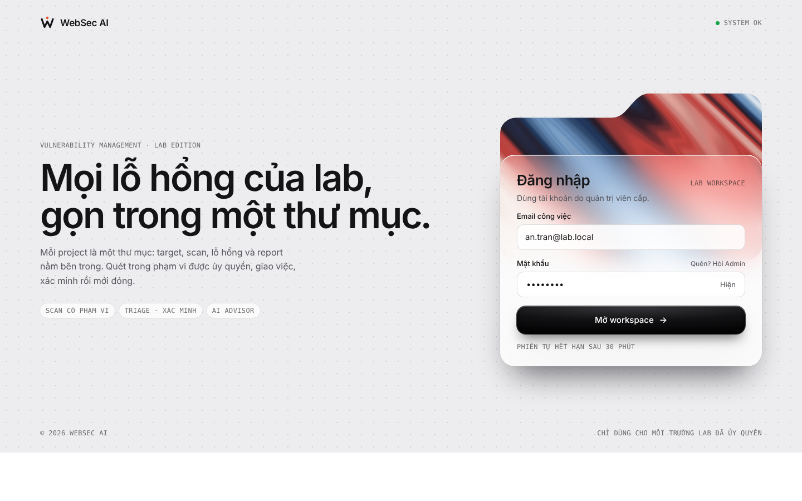
01 Login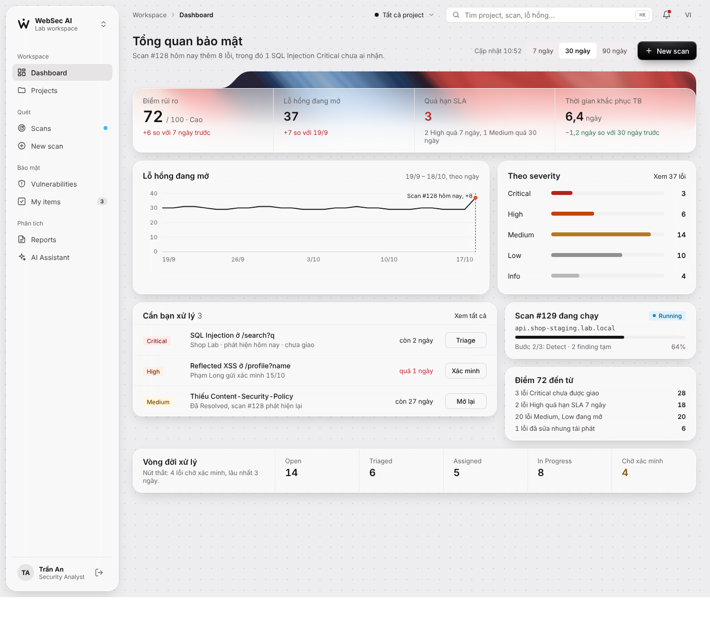
02 Dashboard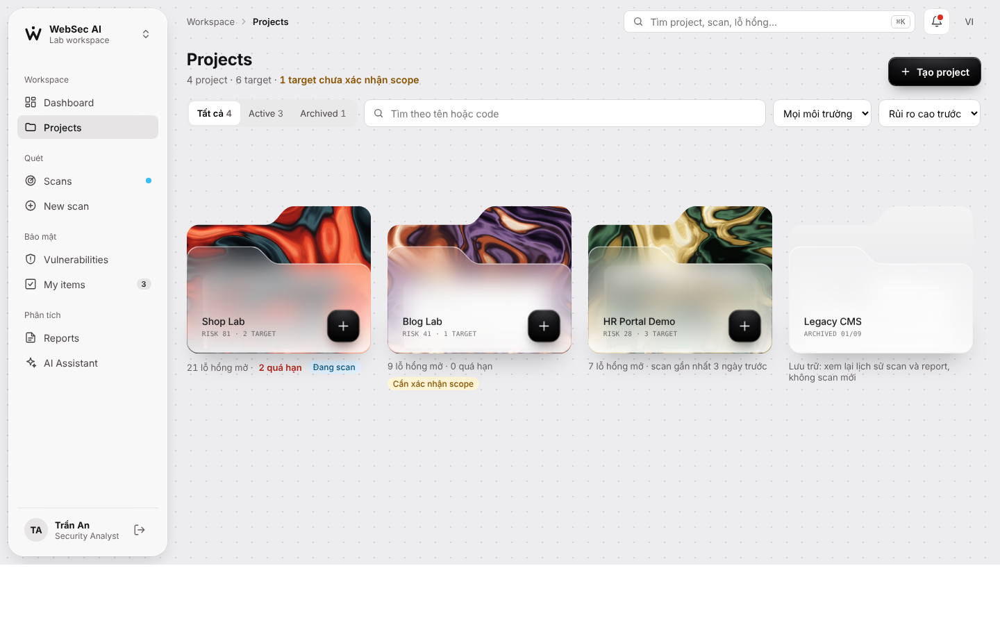
03 Project list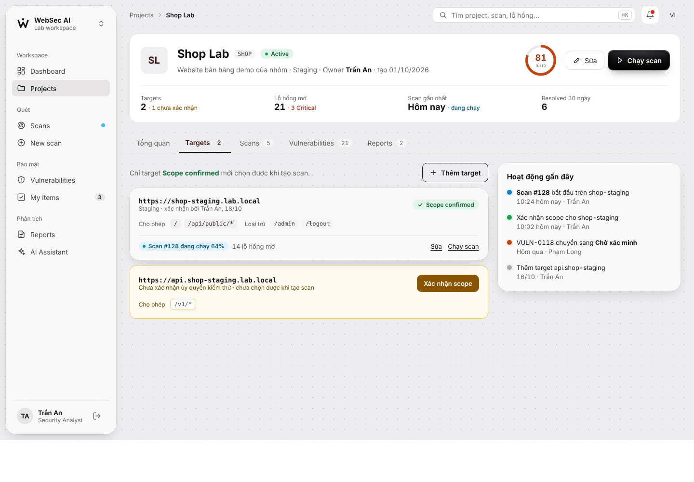
04 Project detail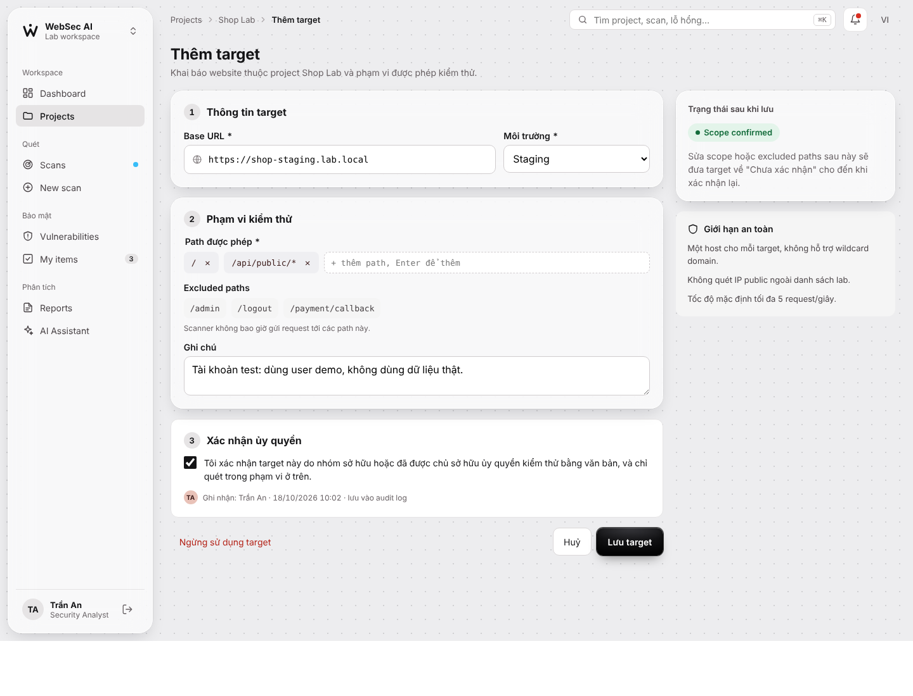
05 Target form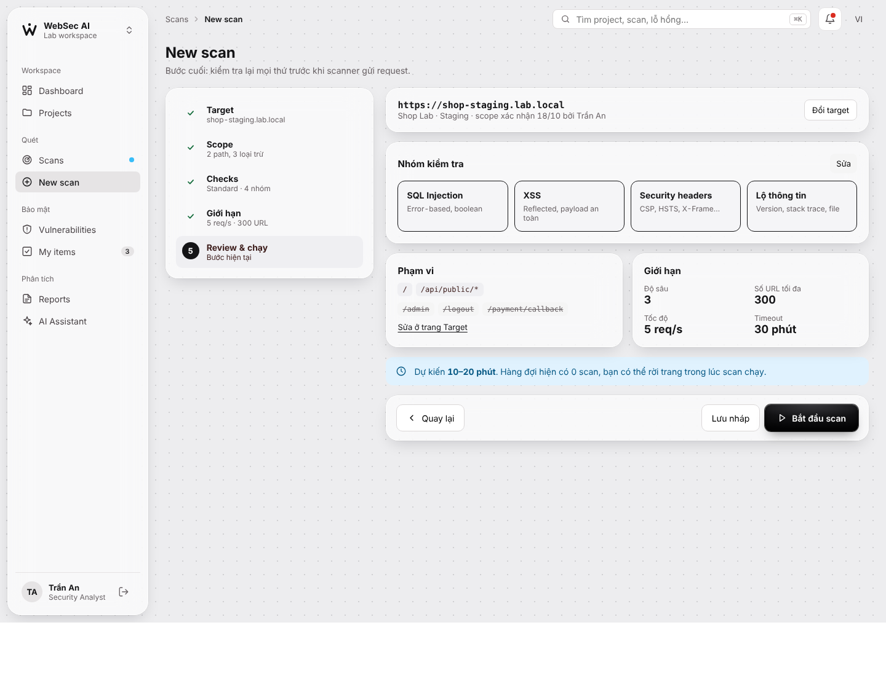
06 New scan wizard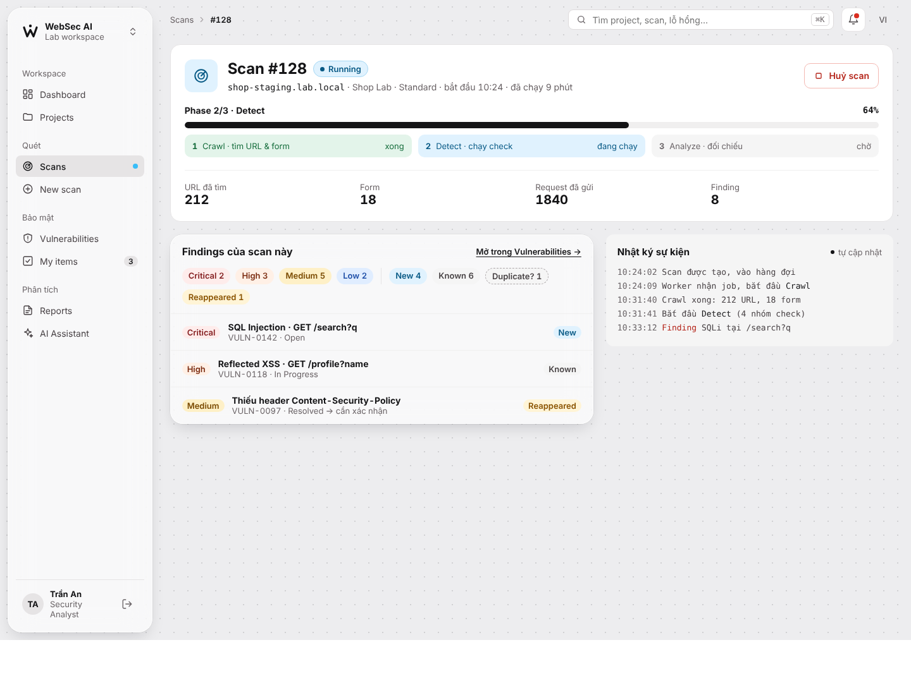
07 Scan detail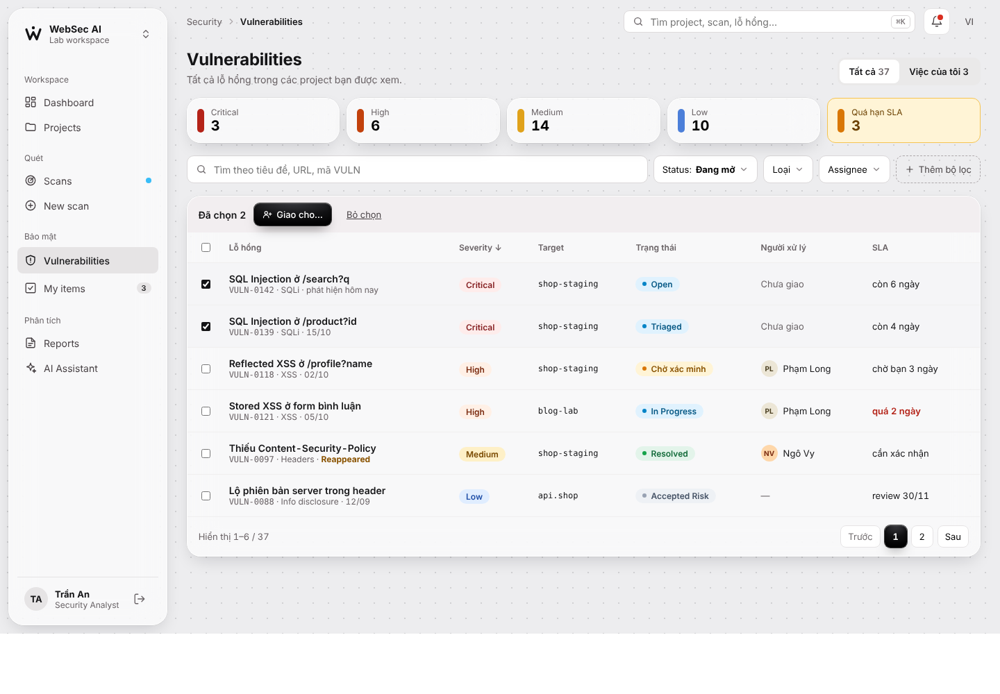
08 Vulnerability list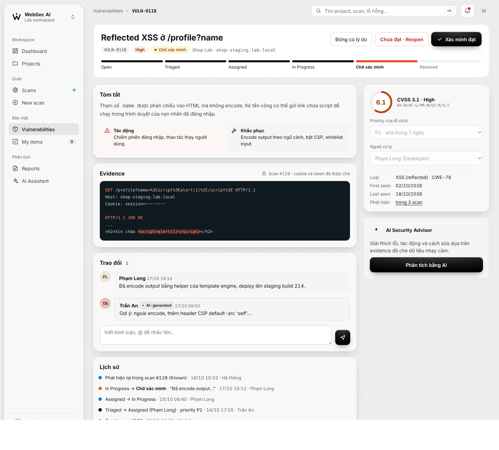
09 Vulnerability detail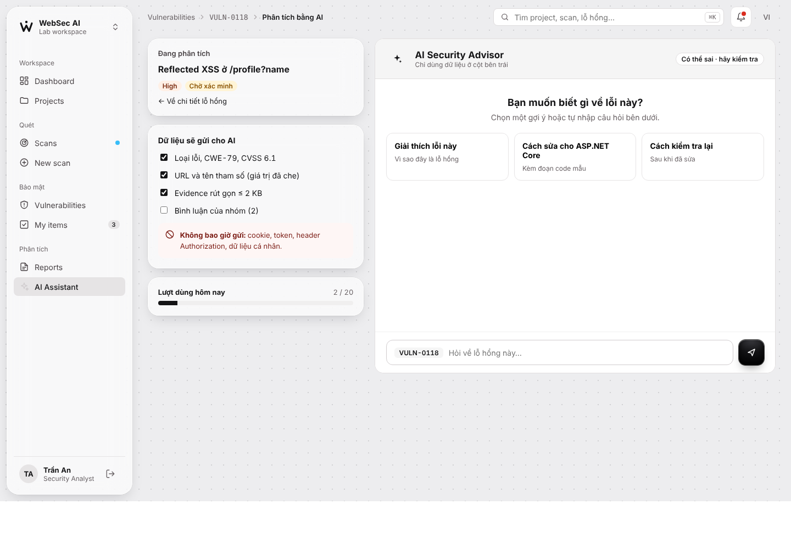
10 AI panel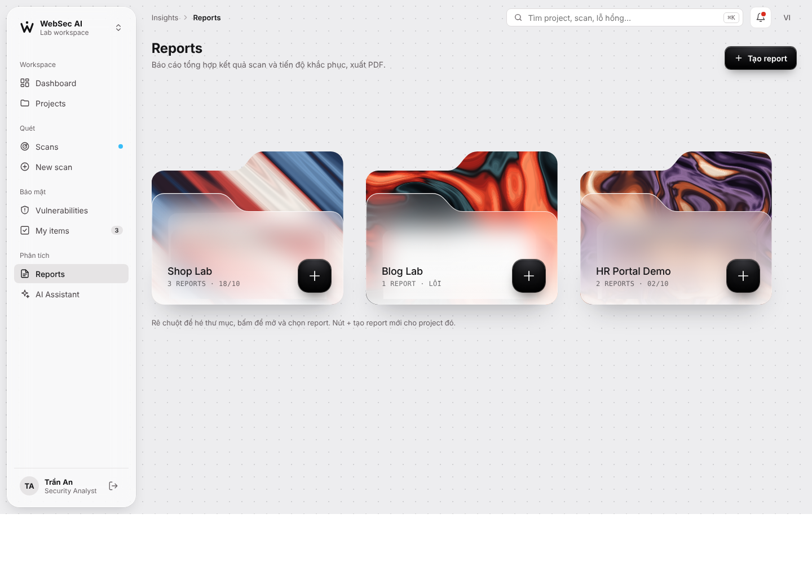
11 Reports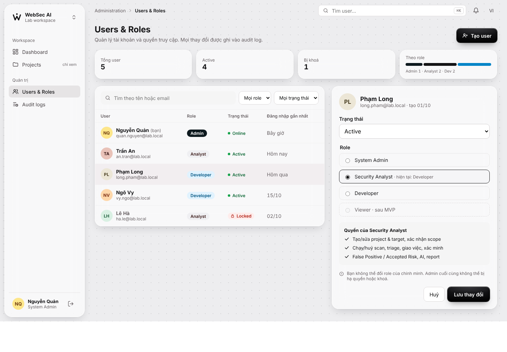
12 Users and Roles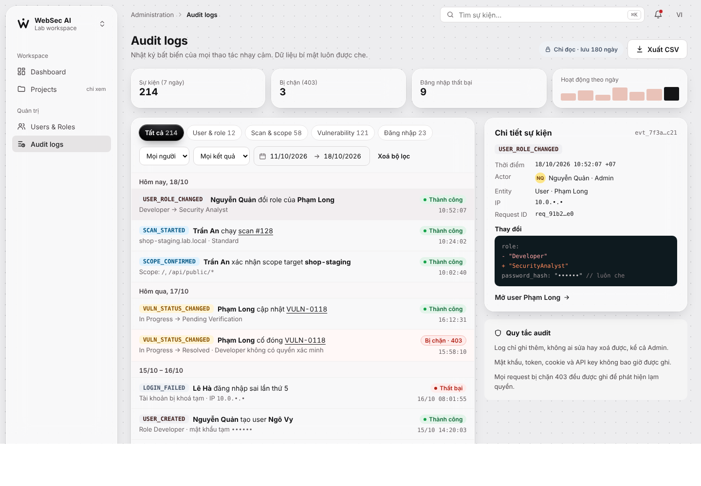
13 Audit logs